I’m Jim Zimmerman (Zim),
The Founder of V-Impact.
I am fascinated by life—this wondrous evolutionary force, four billion years in the making. As a human, privileged to contemplate the magnificence of life’s creative impulse, I am moved.
I believe that through a deeper awareness of life itself, we can come to recognize the true wonder and vast potential of being human.
For decades, I’ve been enthusiastically connecting the dots of evolutionary biology from the extraordinary nature of our existence to this moment in our human journey.
My enduring passion for both individual and collective human potential has led me and my team in this pivotal moment, to create V-Impact.
V-Impact is my sincere effort to offer a new 21st-century narrative—one that redefines who we are as humans, what we are capable of as humankind, and introduces a new model of progress called Conscious Progress. We have laid out a bold Action Agenda, including a Voting Bloc to help us make this a reality.
We invite you to explore the possibilities with us.
Life and Times of Zim
In The Beginning
I am so grateful for my wonderful parents, Marie Molinaro and Alfred Zimmerman.
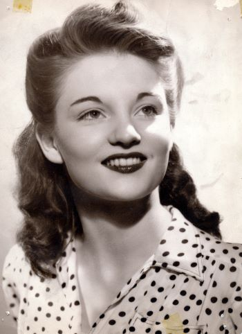
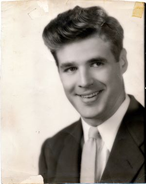
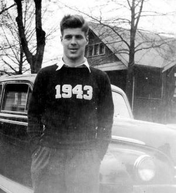
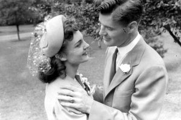
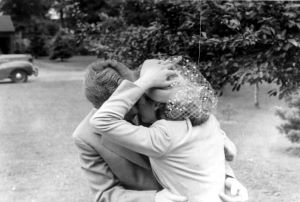
Young Zim Has It Good
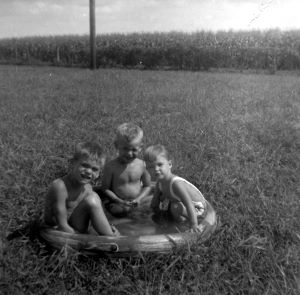
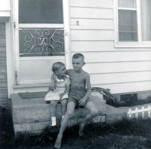
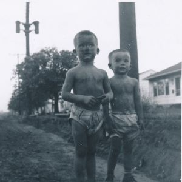
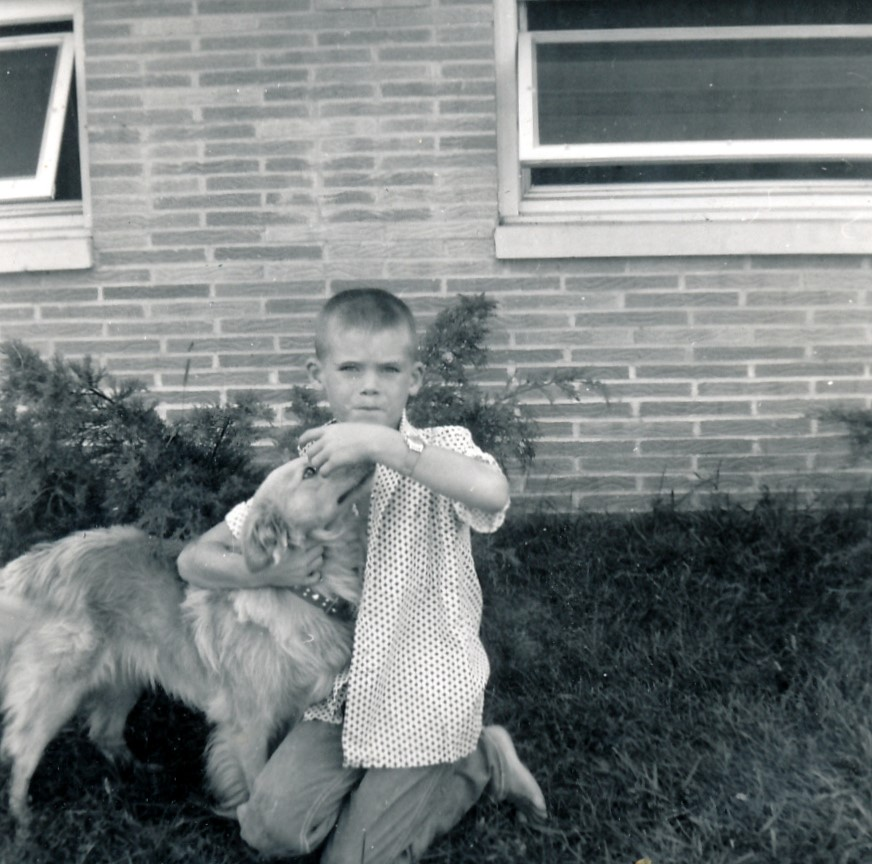
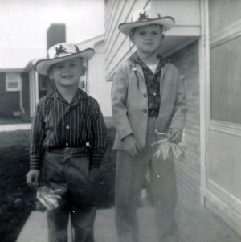
Zim Goes Full-On Hippie
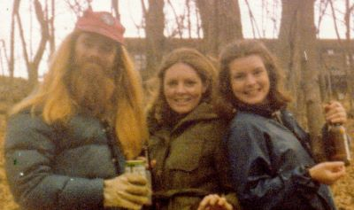
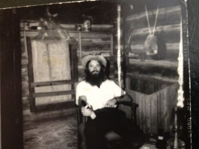
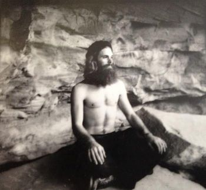
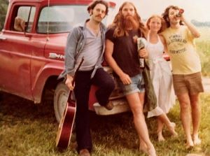
Zim Takes On Business - an entrepreneurial sampling
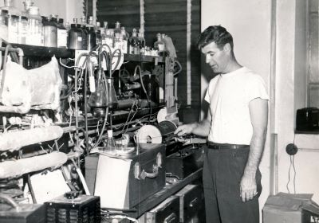
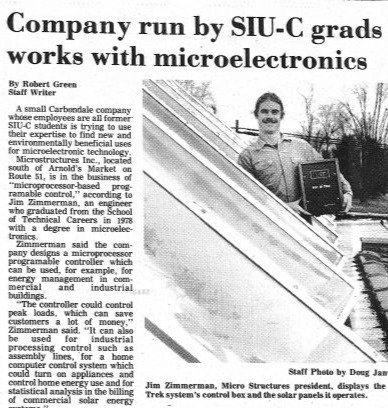
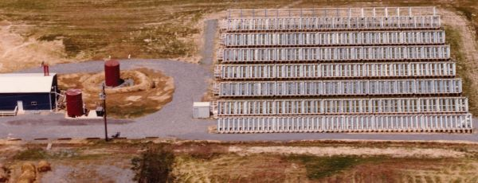
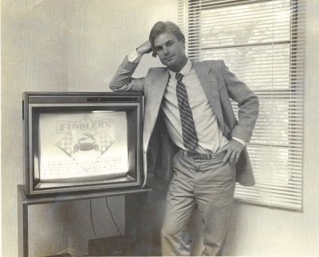
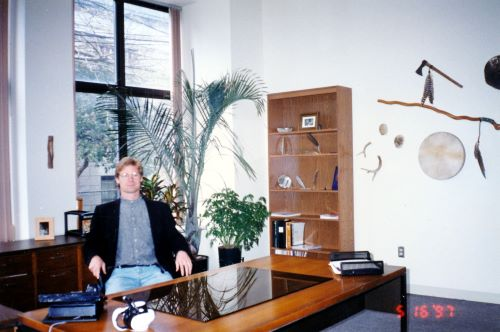
A Five Decade Through-line - activism and inspiration
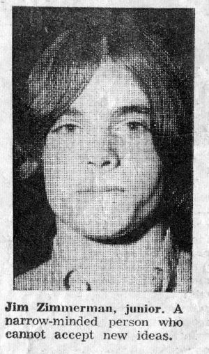
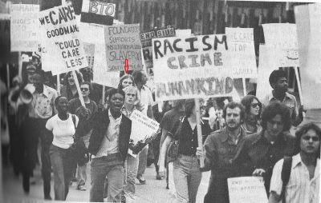
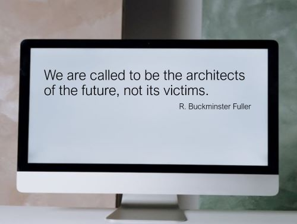
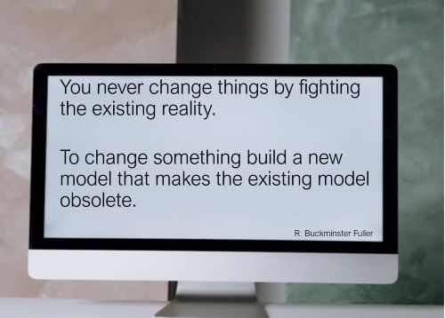
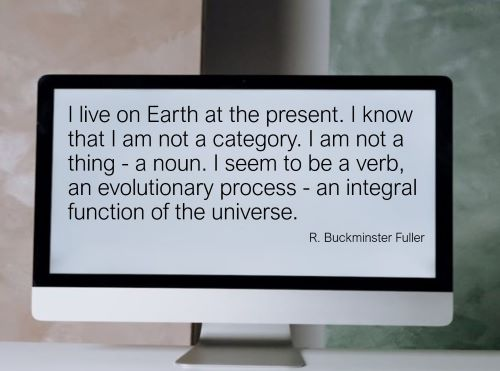
Cierra and Augustus
Thank you for exploring “The Life and Times of Zim.” By sharing my journey, primarily through photographs, I hoped to convey the arc of my life. This process has been an invaluable exercise in self-reflection—one that has greatly fueled my inspiration and motivation for creating this site.
A loving shout out to my daughter, Cierra Zimmerman and her son, Augustus Zimmerman! You both inspire me each day to keep fighting for the future.
Cheers
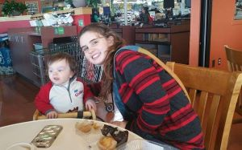